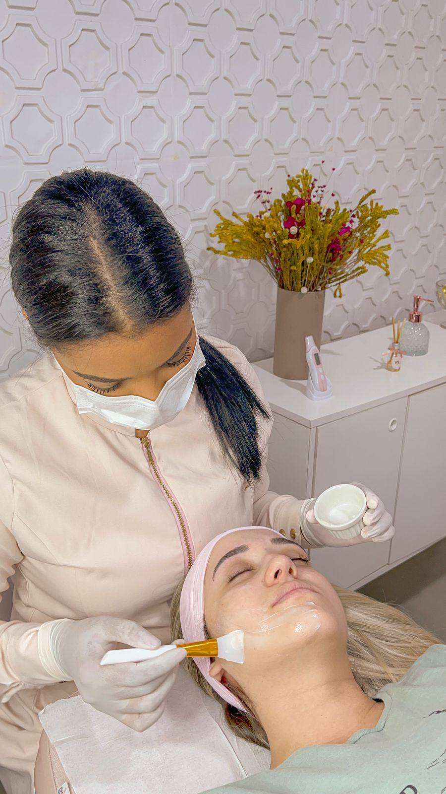
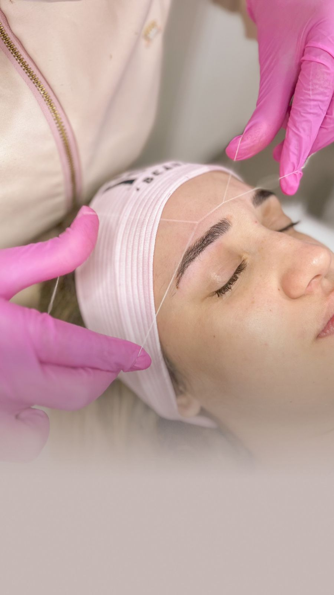
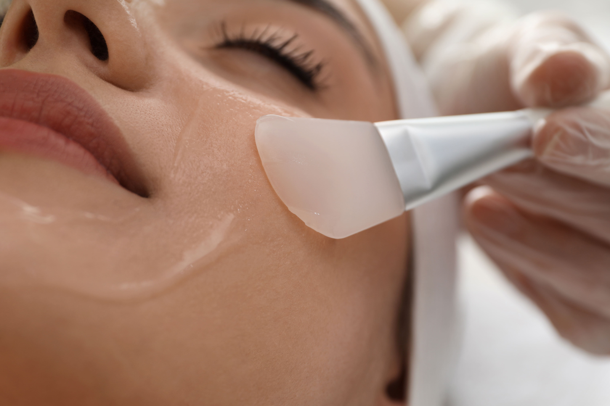
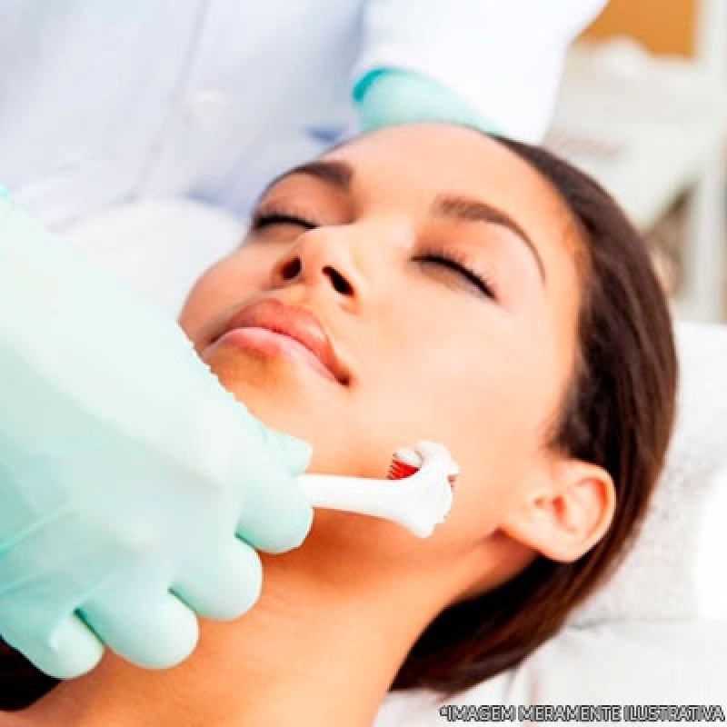
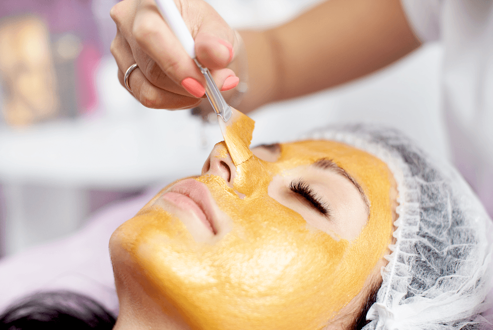
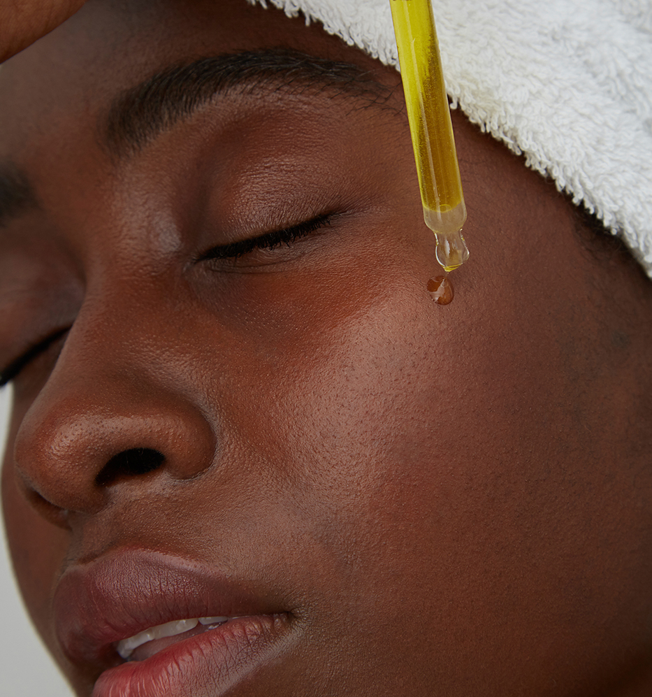

-
Limpeza de pele
Remove impurezas e controla o excesso de oleosidade, deixando a pele mais limpa, macia e saudável.
-
Design de Sobrancelha
Procedimento para definir o melhor formato para suas sobrancelhas, respeitando suas características naturais.
-
Peeling
Com foco na renovação célular, procedimento indicado para manchas, poros dilatados ou linhas de expressão..
-
Microagulhamento
Ideal para amenizar linhas finas e rugas, cicatrizes de acne, reduzir a aparência de manchas, melhorar a absorção de produtos e do aspecto da pele em geral.
-
Revitalização
Técnica extremamente nutritiva, além de equilibrar o PH da pele. Graças aos fatores de regeneração que nela são utilizados, acabam por colaborar, também, no rejuvenescimento da pele.
-
Acne control
Procedimento para reversão do quadro acneico, com ação anti inflamatória, elimina e reduz a produção da bactéria causadora da acne.